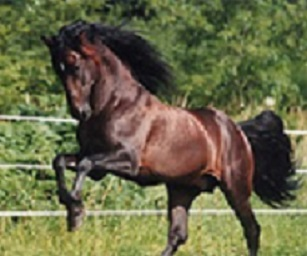

El Cuarto de Milla o Quarter Horse es una raza caballo de caballería ligera desarrollada en los Estados Unidos a partir del Purasangre, el Morgan, el Saddlebred estadounidense y otros rocines, para ser un caballo de carreras de 402 metros.
Historia
Los antecedentes del Cuarto de Milla hay que buscarlas en las dos costas de Norteamérica de la época colonial. En el lado del Atlántico había colonias inglesas y neerlandesas y en el lado del Pacífico se extendían los territorios del virreinato de Nueva España. En los caballos de la zona oriental predominaban las sangres inglesas, irlandesas y escocesas, sin olvidar los animales de origen holandés. En esta época colonial, junto a caballos de granja y de transporte de razas más o menos mezcladas, hay constancia de carreras organizadas con regularidad.
Había carreras de velocidad con recorridos relativamente largos (2 millas), carreras de trotones con carruajes y carreras cortas de un cuarto de milla. Los caballos que competían en estas últimas a menudo eran de las castas criadas por las tribus indígenas (por ejemplo la Chickasaw), basadas en los caballos introducidos en el continente por los conquistadores y colonos españoles. Estos caballos "indígenas" se cruzaran con los caballos Thoroughbred importados de Inglaterra. Uno de los más famosos fue Janus, un nieto de Godolphin Arabian nacido en 1746 e importado a Virginia en 1756. La influencia de caballos de carreras como Janus fue decisiva en la formación del "Quarter Horse colonial". Esta "raza" ha sido llamada por algunos "Famous American Quarter Running". La denominación más antigua: "Celebrated American Quarter Running Horse". Se trataba de un tipo de caballo pequeño, fuerte y rápido, que se usaba como caballo de trabajo toda la semana y como caballo de carreras los domingos.
Características
Aunque relegado a un segundo plano por los purasangre, se hizo de un lugar en el suroeste y oeste de Estados Unidos como una casta de caballos. Los actuales cuarto de milla son de poca estatura y corpulentos, de constitución musculosa y de pecho grande y ancho.
Son famosos por sus arranques veloces, su habilidad en los giros y paradas, su velocidad en cortas distancias y su inteligencia. Miden de pie entre 1,43 y 1,60 m, pesan de 431 a 544 kg y tienen un temperamento tranquilo y cooperativo.
Esta raza se caracteriza por tener una cabeza bien proporcionada, una buena inserción de esta en el cuello, ni demasiado fino ni demasiado grueso.
Amplitud de pecho y un buen tórax. Mirándolo en conjunto es armonioso y atractivo.
El Cuarto de Milla por su sorprendente masa muscular es un caballo relativamente bajo para lo que pesa. Su Velocidad y Ductilidad se basan en su poderosa musculatura y la ubicación de su centro de gravedad mucho más adelante que cualquier otro caballo.
Se caracterizan por ser caballos fuertes, resistentes, vivaces, de tamaño mediano, con gran desarrollo de sus masas musculares, en especial del tren posterior y su reconocida mansedumbre. Muy amplia es la gama de pelaje, sólo no se aceptan los pintos ni los manchados como el appalossa y tampoco los albinos. Es un animal muy sensible y tratable.
Tiene la velocidad de los caballos de sangre caliente de sus ancestros, y la estabilidad de los caballos de sangre fría.
El caballo cuarto de milla es una raza bastante potente y totalmente dispuesta a realizar trabajos de vaquería. Posee un fuerte esqueleto, además de una potente masa muscular, remos fuertes y poderosos y un pecho grande y ancho. Tiene una cabeza bien proporcionada y de aspecto cuadrado, orejas pequeñas y móviles, además de unos ojos grandes y expresivos que le dan una expresión inteligente.
El cuarto de milla es famoso porque tiene unos arranques súper veloces y porque es experto haciendo giros y paradas, por su gran velocidad en cortas distancias gracias a su poderosa musculatura y por ser muy inteligente.
-Sorprendentemente, en una corta distancia, este caballo posee el record de velocidad con 20,47 segundos empleados en correr 402 metros.
-Miden estando de pie entre 1,43 y 1,60 metros. Su cuello no es ni tan delgado ni tan grueso teniendo más bien un tamaño acorde a su cuerpo.
-Su centro de gravedad se encuentra mucho más hacia delante, lo que no es común en los demás caballos.
-El color principal de su pelaje es el marrón, negro y castaño. Tiene la velocidad de un caballo de sangre caliente y la estabilidad de un caballo de sangre fría.
-En cuanto a su comportamiento este caballo se caracteriza por ser tranquilo, muy sociable, sensible, le encanta estar en compañía y tener la atención de su dueño.
-El peso de los caballos cuarto de milla varía entre los 341 y 544 kilogramos aproximadamente, dependiendo de cómo sea su alimentación.
Disciplinas
Los caballos Quarter se utilizan en diversas disciplinas de competición (carreras, Reining, cutting, rodeo, charreria, ...). También son populares como caballos vaqueros, para trabajar en ranchos conduciendo ganado, y como caballos para la equitación de ocio en general o la charrería. Desde Estados Unidos han sido exportados a muchos países: Brasil, Australia, Alemania, Italia, Japón, ... Para las cifras de caballos registrados la AQHA es la asociación más numerosa con más de tres millones de ejemplares en todo el mundo.

|

|

|

|

|

|

|

|